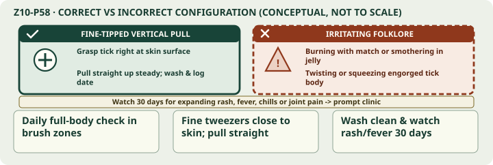

Z10-P58 · Wilderness medicine · New manuscript
Perform daily tick checks, vertical fine-tipped removal, and rash watch
Remove attached ticks intact early to reduce Upper Midwest tick-borne illness risk and recognize delayed clinical warning signs.
When it applies · Any travel in wooded, brushy, tall-grass, or deer-habitat areas (including Minnesota spring through autumn).
Equipment · Fine-tipped tweezers, soap and safe water or alcohol swab, small magnifying lens if carried, and calendar/symptom log.

Actions
- Conduct thorough head-to-toe tick checks at the end of every outdoor day (checking scalp, behind ears, armpits, waistband, groin, and behind knees) and shower promptly after returning home.[M14]
- Grasp an attached tick as close to the skin surface as possible with fine-tipped tweezers and pull straight upward with steady, even pressure—NEVER twist, crush the body, burn with matches, or smother with petroleum jelly/nail polish.[M14]
- Wash the bite site and hands thoroughly with soap and safe water, note the date and location on your body, and seek medical evaluation promptly if a rash (expanding bull's-eye or other rash), fever, chills, body aches, or joint swelling appears within 30 days.[M14, M06]
Failure recognition · Covering an attached deer tick with petroleum jelly or touching it with a hot match tip, which irritates the tick and increases pathogen transfer.[M14]
Verify · Confirm tick pulled straight upward cleanly, site washed, and bite date logged for 30-day symptom watch.[M14, ED]
Stop or change course · Any expanding rash, unexplained fever, severe headache, facial droop, or joint pain within weeks of tick exposure requires prompt clinical evaluation.[M14]
Evidence and editorial notes
- M06 · NIH / MedlinePlus · Wounds and Injuries (current web edition)
- Section: Minor Wound Cleaning, Protection, and Infection Red Flags · Conditions: Superficial cuts, scrapes, and abrasions with potable water available
Support: Rinse minor wounds thoroughly with clean potable water, cover with a clean sterile dressing, and monitor for worsening redness, warmth, swelling, pus, red streaks, or fever.
Limitations: Deep punctures, animal bites, retained foreign bodies, or heavily contaminated wounds require clinical evaluation and tetanus review. · Conflicting evidence: None; separates clean potable rinsing from harsh chemical wound scrubbing.
Editorial note: Anchors field wound hygiene and infection escalation cards. · Specialist reviewer: Wilderness medicine and wound care
Primary source · checked 2026-11-24 - M14 · NIH / MedlinePlus · Tick Bites (current web edition)
- Section: Tick Inspection, Fine-Tipped Removal, and Symptom Watch · Conditions: Outdoor exposure in wooded or grassy tick habitats (including Upper Midwest)
Support: Perform full-body tick checks after brush travel; grasp an attached tick close to the skin with fine-tipped tweezers and pull straight up steadily, clean the site, and monitor for rash or fever over subsequent weeks.
Limitations: Never burn ticks, smother with petroleum jelly, or twist the body; prompt removal reduces transmission risk but does not guarantee prevention. · Conflicting evidence: None; aligns with CDC tick prevention guidance.
Editorial note: Core Upper Midwest vector-borne disease prevention card evidence. · Specialist reviewer: Infectious disease and regional public health
Primary source · checked 2026-11-24
Source lineage · NIH MedlinePlus Tick Bites; new manuscript · Classification · New manuscript.